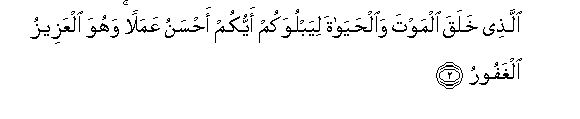
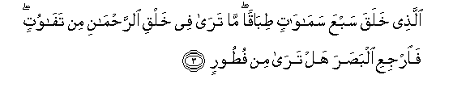
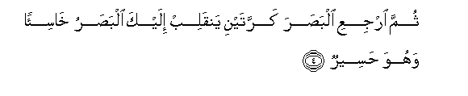
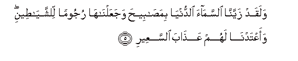
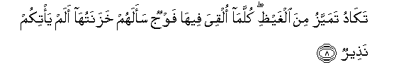
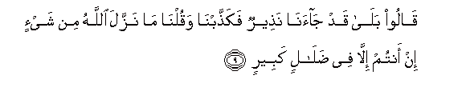
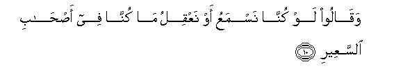
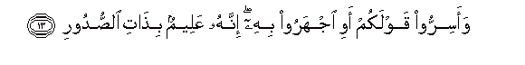

Sacred Texts Islam Index
Hypertext Qur'an Unicode Palmer Pickthall Yusuf Ali English Rodwell
Sūra LXVII.: Mulk, or Dominion. Index
Previous Next

The Holy Quran, tr. by Yusuf Ali, [1934], at sacred-texts.com
Sūra LXVII.: Mulk, or Dominion.
Section 1
1. Tabaraka allathee biyadihi almulku wahuwa AAala kulli shay-in qadeerun
1. Blessed be He
In Whose hands
Is Dominion;
And He over all things
Hath Power;—

2. Allathee khalaqa almawta waalhayata liyabluwakum ayyukum ahsanu AAamalan wahuwa alAAazeezu alghafooru
2. He Who created Death
And Life, that He
May try which of you
Is best in deed:
And He is the Exalted
In Might, Oft-Forgiving;—

3. Allathee khalaqa sabAAa samawatin tibaqan ma tara fee khalqi alrrahmani min tafawutin fairjiAAi albasara hal tara min futoorin
3. He Who created
The seven heavens
One above another:
No want of proportion
Wilt thou see
In the Creation
Of (God) Most Gracious.
So turn thy vision again:
Seest thou any flaw?

4. Thumma irjiAAi albasara karratayni yanqalib ilayka albasaru khasi-an wahuwa haseerun
4. Again turn thy vision
A second time: (thy) vision
Will come back to thee
Dull and discomfited,
In a state worn out.

5. Walaqad zayyanna alssamaa alddunya bimasabeeha wajaAAalnaha rujooman lilshshayateeni waaAAtadna lahum AAathaba alssaAAeeri
5. And We have,
(From of old),
Adorned the lowest heaven
With Lamps, and We
Have made such (Lamps)
(As) missiles to drive
Away the Evil Ones,
And have prepared for them
The Penalty
Of the Blazing Fire.
6. Walillatheena kafaroo birabbihim AAathabu jahannama wabi/sa almaseeru
6. For those who reject
Their Lord (and Cherisher)
Is the Penalty of Hell:
And evil is (such) destination.
7. Itha olqoo feeha samiAAoo laha shaheeqan wahiya tafooru
7. When they are cast therein,
They will hear
The (terrible) drawing in
Of its breath
Even as it blazes forth,

8. Takadu tamayyazu mina alghaythi kullama olqiya feeha fawjun saalahum khazanatuha alam ya/tikum natheerun
8. Almost bursting with fury:
Every time a Group
Is cast therein, its Keepers
Will ask, "Did no Warner
Come to you?"

9. Qaloo bala qad jaana natheerun fakaththabna waqulna ma nazzala Allahu min shay-in in antum illa fee dalalin kabeerin
9. They will say: "Yes indeed;
A Warner did come to us,
But we rejected him
And said, "God never
Sent down any (Message):
Ye are innothing but
An egregious delusion!"

10. Waqaloo law kunna nasmaAAu aw naAAqilu ma kunna fee as-habi alssaAAeeri
10. They will further say:
"Had we but listened
Or used our intelligence,
We should not (now)
Be among the Companions
Of the Blazing Fire!"
11. FaiAAtarafoo bithanbihim fasuhqan li-as-habi alssaAAeeri
11. They will then confess
Their sins: but far
Will be (Forgiveness)
From the Companions
Of the Blazing Fire!
12. Inna allatheena yakhshawna rabbahum bialghaybi lahum maghfiratun waajrun kabeerun
12. As for those who
Fear their Lord unseen,
For them is Forgiveness
And a great Reward.

13. Waasirroo qawlakum awi ijharoo bihi innahu AAaleemun bithati alssudoori
13. And whether ye hide
Your word or publish it,
He certainly has (full) knowledge,
Of the secrets of (all) hearts.
14. Ala yaAAlamu man khalaqa wahuwa allateefu alkhabeeru
14. Should He not know,—
He that created?
And He is the One
That understands the finest
Mysteries (and) is
Well-acquainted (with them).